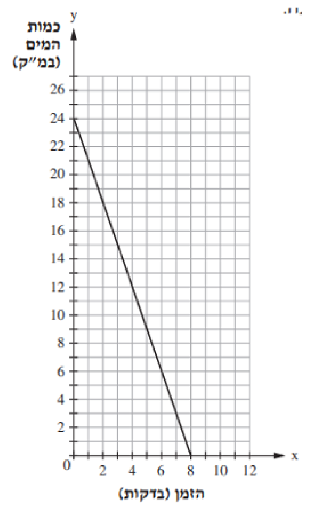

הקודם
אלגברה לכיתה ח' — עמוד 17 / 71
הבא
חוקיות
פונקציה ריבועית
גרף עולה ושיפוע
משפט פיתגורס
משוואה ריבועית
פילוג מורחב
מקבילית
משוואות
אלגברה ח'
אלגברה לכיתה ח'
17
6
אקווריום היה מלא במים. רוקנו את המים בקצב של
2
מ"ק לדקה. הגרף מתאר את כמות המים במכל לפי הזמן:
